Im "Stückliste - Assistent", welcher über den Menüpunkt
1 WinLine PPS
1 Stammdaten
1 Stückliste - Assistent
aufgerufen wird, erfolgt die Verknüpfung einer Stückliste mit einem Fertigprodukt, falls dieses nicht bereits bei der Anlage des Produktionsartikels geschehen ist. Außerdem kann hier die Preiskalkulation durchgeführt werden.
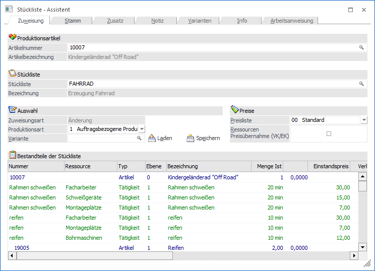
Folgende Eingabefelder, Einstellungen und Information stehen zur Verfügung:
Produktionsartikel
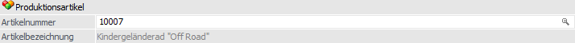
Ø Artikelnummer
Soll eine bestehende Stückliste bearbeitet werden, die bereits bei einem Produktionsartikel hinterlegt wurde, so kann hier die entsprechende Artikelnummer eingegeben werden. Die dazugehörige Stückliste wird so automatisch geladen.
Hinweis
Wenn der "Artikel - Matchcode" über dieses Feld aufgerufen wird, so werden dort ausschließlich "Produktionsartikel" und "Handelsstücklistenartikel" angezeigt.
Achtung
Wird anstatt der Nummer eines Produktionsartikels die Nummer z.B. eines Hauptartikels hinterlegt, dann wird der Artikeltyp nach der Zuweisung der Stückliste automatisch auf "Produktionsartikel" geändert. Dieses ist allerdings nur möglich, wenn mit dem Hauptartikel noch keine Erfassungen getätigt wurden.
Ø Bezeichnung
Hier wird die Bezeichnung des aktuell gewählten Produktionsartikels dargestellt.
Stückliste
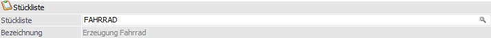
Ø Stückliste
An dieser Stelle erfolgt die Eingabe der Stücklistennummer.
Hinweis
Wurde die Stückliste bereits bei einem Artikel hinterlegt, so wird dieser ebenfalls im Feld "Artikelnummer" geladen. Falls die Stückliste bei mehreren Artikeln hinterlegt wurde, so wird der erste Artikel der gefunden wird geladen.
Ø Bezeichnung
Hier wird die Bezeichnung der aktuell gewählten Stückliste dargestellt.
Auswahl
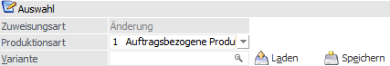
Ø Zuweisungsart
An dieser Stelle wird ausgewiesen, ob der hinterlegte Artikel bereits eine Stückliste hinterlegt hat (d.h. es findet eine "Änderung" statt) oder nicht (d.h. es findet eine "Neudefinition" statt).
Ø Produktionsart
Über die Produktionsart wird gesteuert, wie bzw. welche Dispositionszeilen bei dem Produktionsartikel gebildet werden sollen, wenn dieser z.B. in einem Kundenauftrag von WinLine FAKT erfasst wird.
Hinweis
Bei allen Produktionsarten ist es jederzeit möglich manuell Aufträge für die Produktionsartikel anzulegen.
Folgende Einstellungen sind möglich:
ü 0 - Lagerproduktion
Es wird
Lagerware produziert und der Bedarf ermittelt sich dabei über den
Einkaufsbereich der WinLine FAKT (WinLine FAKT - Einkauf - Bestellvorschlag -
Bestellvorschlag erstellen - Register "Produktionsartikel produzieren").
Im
Bestellvorschlag wird pro Produktionsartikel analysiert, ob der Minimalstand
unterschritten ist und auf den Sollstand aufgefüllt (dabei werden die
Kundenaufträge und die laufenden Produktionsaufträge berücksichtigt). Diese
Bestellvorschläge können dann über Produktionsauftrag einlesen in der
WinLine PPS eingelesen werden.
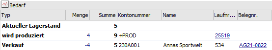
ü 1 - Auftragsbezogene
Produktion/Bestellung
Der Produktionsartikel wird pro Kundenauftrag erstellt,
wobei es im Normalfall niemals "freien" Lagerstand gibt. Dadurch ist es möglich
direkt aus der Belegerfassung der WinLine FAKT heraus Produktionsaufträge in der
WinLine PPS anzulegen. Geschieht dieses nicht direkt, dann ist auch ein Einlesen
dieser Produktionsaufträge über das Programm Produktionsauftrag einlesen ohne
weiteres möglich.
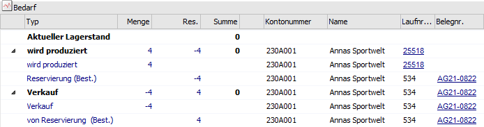
Achtung
Damit eine auftragsbezogene Produktion/Bestellung durchgeführt werden kann, ist auch eine entsprechende Einstellung in der verwendeten Belegart (Register "Optionen" - Feld "auftragsbezogene Produktion / Bestellung") notwendig.
ü 2 - Bestellung mit
Reservierung
Diese Produktionsart ist mit der "0 - Lagerproduktion" zu
vergleichen. Auch in diesem Fall wird Lagerware produziert und der Bedarf
ermittelt sich ebenfalls identisch.
Zusätzlich werden bei dieser Einstellung
sogenannte Reservierungszeilen gebildet. D.h. es werden die bestellten Mengen
für den Produktionsartikel fix bis zur Auslieferung reserviert und können nicht
anderwärtig vergeben werden.
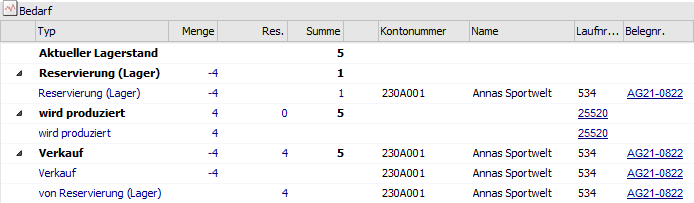
Achtung
Damit Reservierungszeilen gebildet werden können, muss die Reservierung auch in den FAKT-Parametern (Bereich "Artikel - Allgemein", Feld "Res. Verwenden") aktiviert sein.
Hinweis
Die Produktionsart kann auch jederzeit im Artikelstamm (Register "Lager" - Unterregister "Einstellungen") geändert werden (Feld "Produktion / Bestellung").
Ø Auswahl Variante
An dieser Stelle kann ein Variantenstring für den Produktionsartikel manuell oder mit Hilfe eines Assistenten (via Lupen-Symbol oder Taste F9 öffnet sich das Fenster Variantendefinition) hinterlegt werden. Die laut Variante benötigten Komponenten bzw. Ressourcen werden anschließend in der Tabelle "Bestandteile der Stückliste" entsprechend angezeigt.
Hinweis
Die hier gewählte Variante wird nicht in dem Artikel oder der Stückliste gespeichert, d.h. es handelt sich um eine temporäre Auswahl.
Ø Variante laden / Variante speichern
Mit Hilfe dieser Buttons kann die Variante (d.h. der Variantenstring) geladen bzw. gespeichert werden, wobei dieses über das Fenster Variantensteuerung stattfindet.
Preise
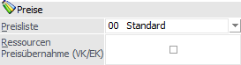
Ø Preisliste
Für eine korrekte Preiskalkulation, welche über die Tabelle "Bestandteile der Stückliste" erfolgt, muss eine Preisliste ausgewählt. Aufgrund dieser Auswahl werden…
ü … die aktuellen Einstandspreise der Komponenten, …
ü … die Verkaufspreise der Komponenten (gibt es nur, wenn dieser im Artikelstamm auch angelegt wurde - in der Regel nur dann der Fall, wenn die Komponenten auch Handelsware sind), …
ü … die Einkaufspreise der Komponenten und…
ü … die Summen dieser drei Preise…
… entsprechend angezeigt.
Achtung
Der ermittelte Preis (Summe des Verkaufs- bzw. Einkaufspreises) wird nicht automatisch vom Programm in den Artikelstamm des Fertigproduktes zurückgeschrieben!
Hinweis
Die zuletzt selektierte Preisliste wird benutzerspezifisch gespeichert. Bei der nächsten Verwendung des Fensters wird diese Preisliste automatisch nach Selektion des Artikels vorgeschlagen.
Ø Ressourcen Preisübernahme (VK/EK)
Bei Aktivierung von dieser Checkbox kann automatisch der Kosten-Betrag einer Ressource (laut dem Stundensatz aus dem Ressourcenstamm) in die EK bzw. VK-Preisspalte übernommen werden. Somit kann die Preiskalkulation auch den (Einzel-)Kostenbetrag von den Ressourcen berücksichtigen.
Tabelle "Bestandteile der Stückliste"
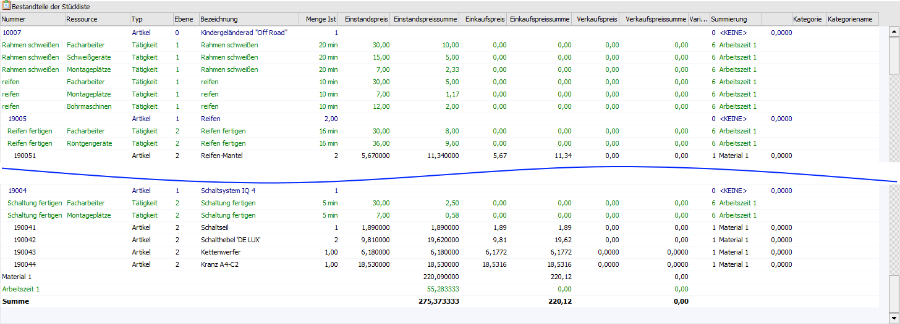
In der Tabelle werden alle Komponenten und benötigten Ressourcen aufgeführt und die Preise aufgrund der ausgewählten Preisliste angezeigt.
Über die Spalten "Einstandspreis", "Verkaufspreis" und "Einkaufspreis" kann die Kalkulation erfolgen, wobei Einkauf und Verkauf individuell angepasst werden kann.
Zusätzlich sind Spalten für die Summe der VK-, EK-, und Einstandspreissumme pro Zeile in der Tabelle mitgeführt. Jede Stücklistenkomponente (Ressource bzw. Artikel) kann zur Übersicht einer Summe über die Spalte "Summierung" zugewiesen werden. Insgesamt 9 unterschiedliche Summenspeicher stehen zur Verfügung:
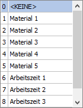
Im Fußbereich der Tabelle werden Gesamtsummen für die Einstandspreis-, Verkaufspreis-, und Einkaufspreissummen gebildet. Wenn eigener Summierungen für die jeweiligen Stücklistenkomponenten hinterlegt sind, wird auch pro Summierung eine eigene Gesamtsumme mitgeführt.
Achtung
Der ermittelte Preis (Summe des Verkaufs- bzw. Einkaufspreises) wird nicht automatisch vom Programm in den Artikelstamm des Fertigproduktes zurückgeschrieben! Die Tabelle kann mit der rechten Maus mit der Kontextmenü-Option "Export" als Excel-Chart exportiert werden.
Tabellenbuttons

Ø Ausgabe Excel
Durch Anwahl des Buttons "Ausgabe Excel" wird der Inhalt der Tabelle an Microsoft Excel übergeben.
Ø Tabelleneinstellungen speichern
Die Spalten einer Tabelle können grundsätzlich an beliebige Positionen verschoben, bzw. in der Breite entsprechend angepasst werden. Durch Anwahl des Buttons "Tabelleneinstellungen speichern" werden die Einstellungen benutzerspezifisch gespeichert und bei dem nächsten Aufruf des Programmpunktes wieder vorgeschlagen.
Ø Gesamteinstellungen speichern…
Im Gegensatz zu "Tabelleneinstellungen speichern" können mit "Gesamteinstellungen speichern" mehrere Tabellenaufbauten gespeichert und nach Wunsch geladen werden. Zusätzlich werden Sonderfunktionen der Tabelle (z.B. "Spalte gruppieren") ebenfalls bei der Speicherung bedacht.
Buttons
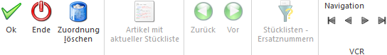
Ø Ok
Durch Anwahl des Buttons "Ok" bzw. der Taste F5 werden die getätigten Änderungen (d.h. Stücklistenzuweisung und Produktionsart) gespeichert.
Hinweis
Wird anstatt der Nummer eines Produktionsartikels die Nummer z.B. eines Hauptartikels hinterlegt, dann wird der Artikeltyp nach der Zuweisung der Stückliste automatisch auf "Produktionsartikel" geändert. Dieses ist allerdings nur möglich, wenn mit dem Hauptartikel noch keine Erfassungen getätigt wurden.
Ø Ende
Durch Anwahl des Buttons "Ende" bzw. der Taste ESC wird das Fenster geschlossen und alle nicht gespeicherten Änderungen verworfen.
Ø Zuordnung löschen
Durch Drücken dieses Buttons wird die Verknüpfung zwischen Produktionsartikel und Stückliste getrennt.
Achtung
Sollte der Artikel zuvor als "Auftragsbezogene Produktion/Bestellung" angelegt gewesen sein, so wird dieser durch das Löschen auf den Status "Lagerproduktion" zurückgestellt.
Ø Artikel mit aktueller Stückliste (nur im Programm Stückliste)
Durch Anwahl dieses Buttons wird das Fenster "Stücklisten-Info" geöffnet. In diesem wird angezeigt, in welchen Artikeln die aktuelle Stückliste hinterlegt wurde.
Ø Stücklistenebene Zurück / Vor (nur im Programm Stückliste)
Wenn in der aktuellen Stückliste Komponenten mit Stückliste (d.h. Handelsstücklisten- oder Produktionsartikel) hinterlegt sind, dann kann in diese Stücklisten per Doppelklick gewechselt werden. Mit den Buttons "Zurück" bzw. "Vor" kann anschließend zwischen diesen unterschiedlichen Ebenen gewechselt werden.
Ø Stücklisten - Ersatznummern (nur im Programm Stückliste)
Durch Anwahl dieses Buttons wird das Fenster Stücklisten - Ersatznummern geöffnet. In diesem können u.a. Stücklistenkomponenten angegeben werden, welche bei der Produktionsauftragsanlage (z.B. über die Produktionsvorbereitung bzw. während der Auftragserfassung) automatisch ersetzt werden sollen.
Ø VCR-Buttons
Über die so genannten VCR-Buttons kann durch Mausklick zwischen den einzelnen Stammdatensätzen (Produktionsartikeln mit deren hinterlegten Stücklisten) geblättert werden.
ü  Damit kann der erste Stammdatensatz angesprochen werden.
Damit kann der erste Stammdatensatz angesprochen werden.
ü  Damit kann der vorherige Stammdatensatz angesprochen werden.
Damit kann der vorherige Stammdatensatz angesprochen werden.
ü Damit kann der nächste Stammdatensatz angesprochen werden.
ü Damit kann der letzte Stammdatensatz angesprochen werden.